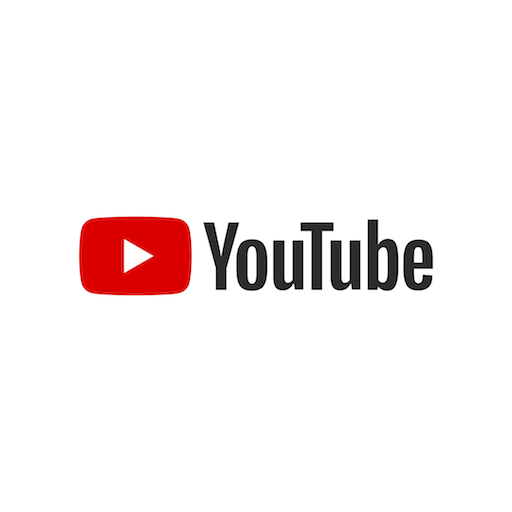

♦YOUTUBE♦

YouTube is an American social media and online video sharing platform owned by Google. YouTube was founded on February 14, 2005,[7] by Chad Hurley, Jawed Karim, and Steve Chen, who were former employees of PayPal. Headquartered in San Bruno, California, it is the second-most-visited website in the world, after Google. In January 2024, YouTube had more than 2.7 billion monthly active users, who collectively watched more than one billion hours of videos every day.[8] As of May 2019, videos were being uploaded to the platform at a rate of more than 500 hours of content per minute,[9][10] and as of mid-2024, there were approximately 14.8 billion videos in total.[11] On November 13, 2006, YouTube was purchased by Google for US$1.65 billion (equivalent to $2.39 billion in 2024).[12] Google expanded YouTube's business model from generating revenue through advertisements alone to offering paid content such as movies and exclusive content explicitly produced for YouTube. It also offers YouTube Premium, a paid subscription option for watching content without ads. YouTube incorporated the Google AdSense program, generating more revenue for both YouTube and approved content creators. In 2023, YouTube's advertising revenue totaled $31.7 billion, a 2% increase from the $31.1 billion reported in 2022.[13] From Q4 2023 to Q3 2024, YouTube's combined revenue from advertising and subscriptions exceeded $50 billion.[14]
♦INSTAGRAM♦

Instagram[a] is an American photo and short-form video sharing social networking service owned by Meta Platforms. It allows users to upload media that can be edited with filters, be organized by hashtags, and be associated with a location via geographical tagging.[7] Posts can be shared publicly or with preapproved followers. Users can browse other users' content by tags and locations, view trending content, like photos, and follow other users to add their content to a personal feed.[8] A Meta-operated image-centric social media platform, it is available on iOS, Android, Windows 10, and the web. Users can take photos and edit them using built-in filters and other tools, then share them on other social media platforms like Facebook. It supports 33 languages including English, Hindi, Spanish, French, Japanese, and Korean.[9] Instagram was originally distinguished by allowing content to be framed only in a square (1:1) aspect ratio of 640 pixels to match the display width of the iPhone at the time. In 2015, this restriction was eased with an increase to 1080 pixels. It also added messaging features, the ability to include multiple images or videos in a single post, and a Stories feature—similar to its main competitor, Snapchat, which allowed users to post their content to a sequential feed, with each post accessible to others for 24 hours. As of January 2019, Stories was used by 500 million people daily.[8]
♦TWITTER♦
X, formerly known as Twitter,[b] is an American microblogging and social networking service. It is one of the world's largest social media platforms and one of the most-visited websites.[7][8] Users can share short text messages, images, and videos in short posts (commonly and unofficially known as "tweets") and like other users' content.[9] The platform also includes direct messaging, video and audio calling, bookmarks, lists, communities, Grok chatbot integration, job search,[10] and a social audio feature (X Spaces). Users can vote on context added by approved users using the Community Notes feature. The platform, then called twttr, was created in March 2006 by Jack Dorsey, Noah Glass, Biz Stone, and Evan Williams, and was launched in July of that year; it was renamed Twitter some months later. Twitter grew quickly; by 2012 more than 100 million users produced 340 million daily tweets.[11] Twitter, Inc., was based in San Francisco, California, and had more than 25 offices around the world.[12] A signature characteristic of the service initially was that posts were required to be brief. Posts were initially limited to 140 characters, which was changed to 280 characters in 2017. The limitation was removed for subscribed accounts in 2023.[13] 10% of users produce over 80% of tweets.[14][15] In 2020, it was estimated that approximately 48 million accounts (15% of all accounts) were run by internet bots rather than humans.[16]
♦SNAPCHAT♦
Snapchat is an American multimedia social media and instant messaging app and service developed by Snap Inc., originally Snapchat Inc. One of the principal features of the app are that pictures and messages, known as "Snaps", are typically only accessible for a brief period of time before their recipients can no longer access them. The app has evolved from originally focusing on person-to-person photo sharing to now showcasing users' "Stories" of 24 hours of chronological content, along with "Discover", letting brands show ad-supported short-form content. It also allows users to store photos in a password-protected area called "My Eyes Only". It has also reportedly incorporated limited use of end-to-end encryption, with intention to expand its use in the future. Snapchat was created by Evan Spiegel, Bobby Murphy, and Reggie Brown,[6] former students at Stanford University. It is known for representing a mobile-first direction for social media, and places significant emphasis on users interacting with virtual stickers and augmented reality objects. In 2023, Snapchat had over 300 million monthly active users.[7] On average more than four billion Snaps were sent each day in 2020.[8] Snapchat is popular among the younger generations, with most users being between ages 18 and 24.[7] Snapchat is subject to privacy concerns with social networking services.
♦FACEBOOK♦

Facebook is an American social media and social networking service owned by the American technology conglomerate Meta. Created in 2004 by Mark Zuckerberg with four other Harvard College students and roommates, Eduardo Saverin, Andrew McCollum, Dustin Moskovitz, and Chris Hughes, its name derives from the face book directories often given to American university students. Membership was initially limited to Harvard students, gradually expanding to other North American universities. Since 2006, Facebook allows everyone to register from 13 years old, except in the case of a handful of nations, where the age requirement is 14 years.[6] As of December 2023, Facebook claimed almost 3.07 billion monthly active users worldwide.[7] As of July 2025, Facebook ranked as the third-most-visited website in the world, with 23% of its traffic coming from the United States.[8] It was the most downloaded mobile app of the 2010s